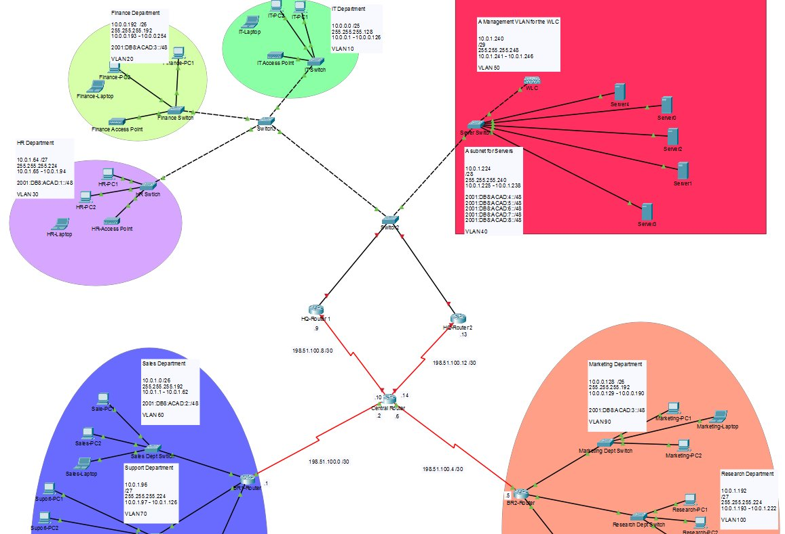
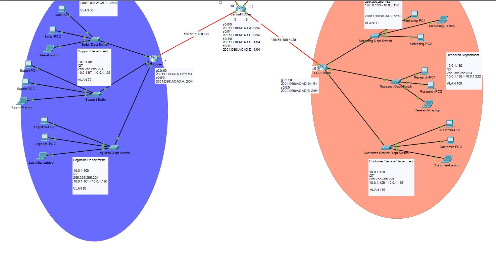

You've found the portfolio of Pao Ze Yang — sophomore CS student at the University of Wisconsin–Stout, concentrating in Cybersecurity and Software Design & Development, with a 3.5 GPA. I'm interested in how networks are built, how they're broken, and how to make them more secure.
I'm still early in my journey and building experience as I go. Right now I'm getting comfortable with Java, C++, Linux, and SQL, and I've been spending a lot of time in my networking course learning how packets actually move through a system. I'd rather learn by doing something real than just reading about it, which is why course projects have been a good fit so far.
Outside of class I've been working at Walmart for five years — close to 20 hours a week while going to school full time. It's taught me a lot about showing up consistently and working across teams, which I think matters as much as the technical stuff. I also play a lot of Magic: The Gathering, which rewards the same kind of systems thinking that shows up in networking and debugging.
Feel free to reach out if you want to talk about internship opportunities, security, or anything else on your mind.
For my networking midterm I designed and built a simulated enterprise network in Cisco Packet Tracer — the kind of multi-department setup you'd see in a real organization. The goal was to get every part of the network talking to every other part correctly, which meant making a lot of decisions about how to organize and route traffic.
The network spans two branch routers (BR1 and BR2) connected to a central router, with each department living in its own subnet and VLAN. Altogether I set up nine departments: Finance, IT, HR, Sales, Support, Logistics, Marketing, Research, and Customer Service — plus a dedicated server subnet and a wireless LAN controller managing access points across the building.

Full network topology — HQ site with Finance, IT, HR departments and server infrastructure (click to enlarge)

Branch detail — BR1 and BR2 routers serving Sales, Logistics, Marketing, Research, and Customer Service (click to enlarge)
The trickiest parts were getting the inter-VLAN routing right across the branch routers and making sure the WAN links between routers were correctly subnetted. It was a lot of moving pieces, but seeing everything ping successfully across departments was satisfying.
More to come as I work through my program.
I know Java and C++ from coursework, and I've been picking up Linux on the side. I have a working knowledge of SQL and basic database concepts from class. On the networking side I've worked with Cisco Packet Tracer, TCP/IP, DNS, DHCP, subnetting, VLANs, and IPv4/IPv6 addressing. I'm also comfortable with Windows and standard productivity software.
You can download a copy of my resume below.
Download resume (PDF)Best ways to reach me: